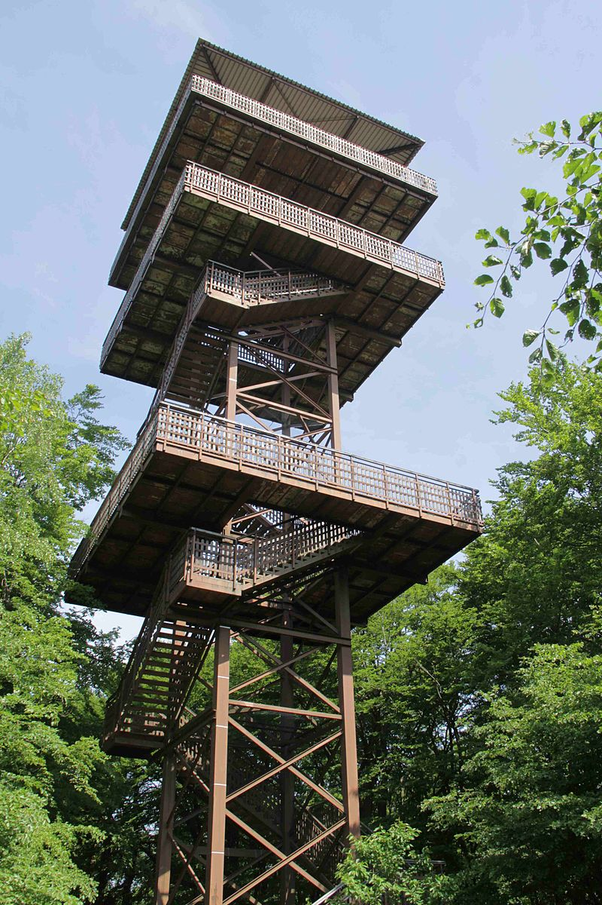
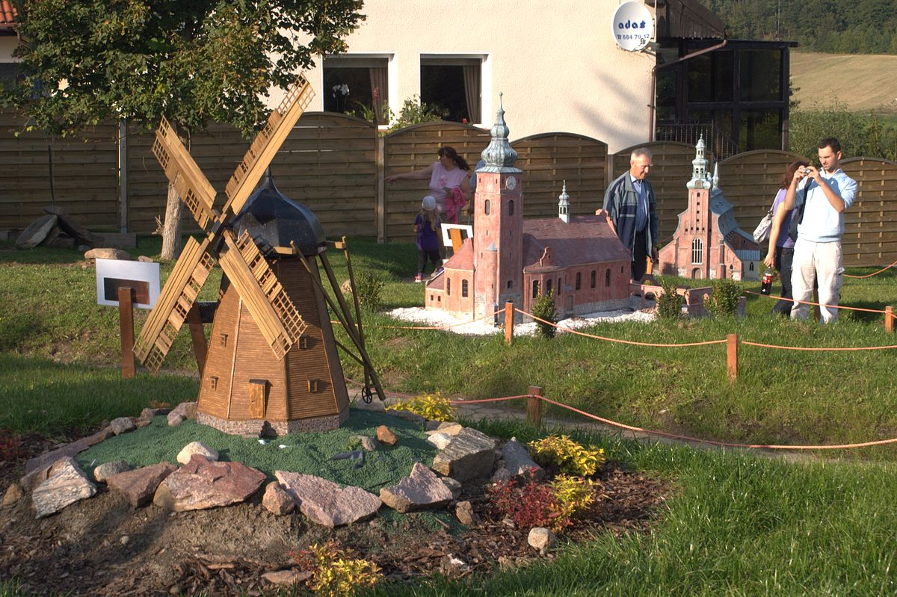
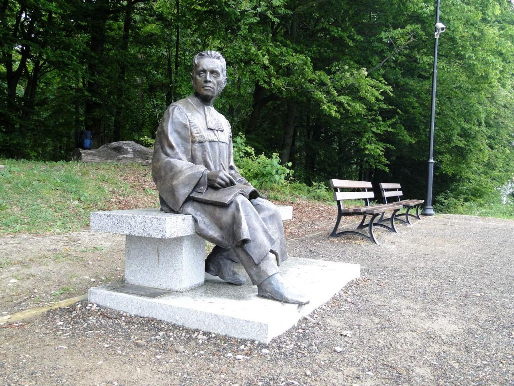

Dane o powiecie
| Siedziba | Kartuzy |
| Powierzchnia | 1121 km² |
| Populacja | 133 841 |
Dane kontaktowe starostwa powiatowego
| Telefon | +48 (058) 681-00-32 |
| Adres | ul. Dworcowa 1 83-300 Kartuzy |
| Strona | www.kartuskipowiat.com.pl |
Atrakcje turystyczne
Wieżyca
Najwyższe wzgórze pasma morenowych Wzgórz Szymbarskich o wysokości 328,7 m n.p.m. Wierzchołek jest porośnięty lasem bukowym. Na szczycie wzgórza usadowiono platformę widokową – Kaszubska Wieża Widokowa im. Jana Pawła II. Przez szczyt prowadzi turystyczny Szlak Wzgórz Szymbarskich.
Źródło: wikipedia.orgKaszubski Park Miniatur
Park w Stryszej Budzie z modelami w skali 1:25 znanych obiektów z Kaszub jak również z całej Polski i ze świata. Pośród rzeczonych obiektów są m.in.: kościoły, zamki, dworki, osada kaszubska i latarnie morskie. Na terenie parku znajdują się również inne atrakcje w tym m.in.: modele postaci ze świata bajek, małe zoo z żywymi zwierzętami czy choćby plac zabaw.
Źródło: wikipedia.orgŁaweczka Asesora w Kartuzach
Ławeczka Asesora stoi przy ładnie zagospodarowanym punkcie widokowym nad Jeziorem Karczemnym w Kartuzach przy ul. Chmieleńskiej. Można ją znaleźć na wzniesieniu górującym ponad jeziorem, na wysokości 226,9 m n.p.m.
Nazwa ławeczki wzięła się prawdopodobnie od jednego z XIX-wiecznych asesorów sądowych - Karla Pernina, który niegdyś chętnie tam przesiadywał podziwiając krajobraz i panoramę miasta. Przez 3 lata przemierzał on Kaszuby, co pozwoliło mu na opracowanie przewodnika turystycznego.
Zródło: polskieszlaki.pl